| 日付 | 2016年1月10日（日） |
|---|---|
| 山域 | 赤城・榛名 |
| メンバー | 家族（妻、長女・4歳、長男・2歳） |
| 山行形態 | 子連れ日帰り |
| アクセス | 車 |
| ルート (Map) | 水沢観音駐車場 (9:26) - (10:58) 地蔵 - (11:16) 水沢山 (12:09) - (12:23) 地蔵 - (13:32) 水沢観音駐車場 |
今年の初登りは水沢山に行く。
榛名山の一角にある山で、気軽に登れて展望の良い山のようだ。
前回登った時は雲に覆われていて視界0だった。
冬はそれなりに雪が積もるが、今年は雪があまり降っていないため、
この時期でも問題なく登れそうだ。
水沢観音の駐車場に車を停める。標高590m。
大きな駐車場があるが、まだ朝早いためそれほど車は停まっていない。
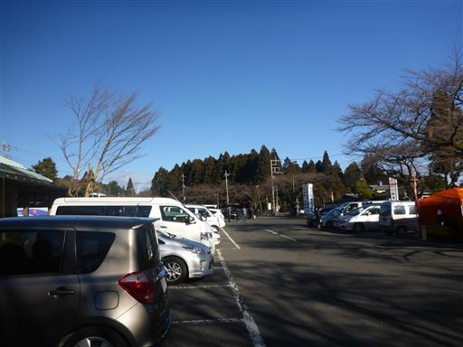
鐘を突く。一突き100円とのこと。
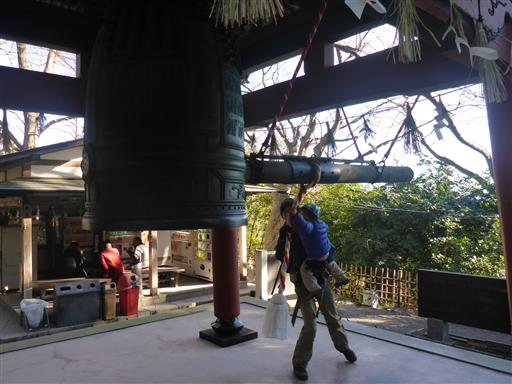
娘が線香を手に取っていたため、ここでも100円。
火をつけて供える。
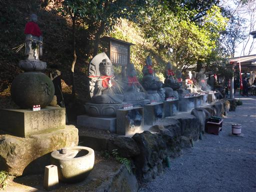
本堂で手を合わせる。
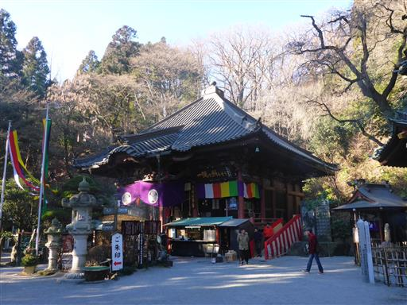
六角堂。六地蔵尊の台座が回転するようになっている。
他では見かけない珍しいもので、願い事を唱えながら左に3回まわすと良いらしい。
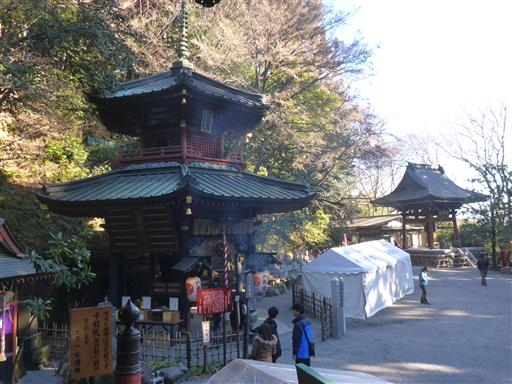
境内の奥にある鳥居の先が水沢山の登山道に続いている。
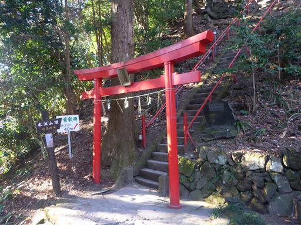
かなり急な階段だ。子供たちは怖がることなくどんどん登っている。
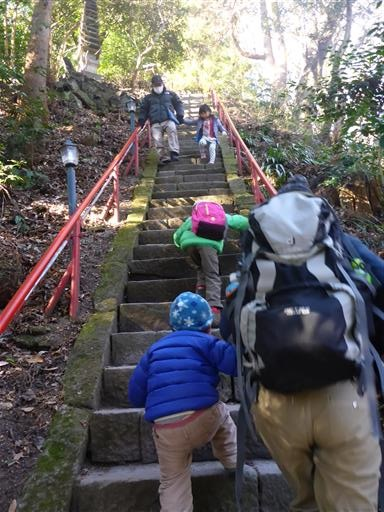
登山道に入るとずっと雑木林が続く。景色の変化はほとんど無い。
朝から登っていた登山者が次々下山してくる。地元では人気の山のようだ。
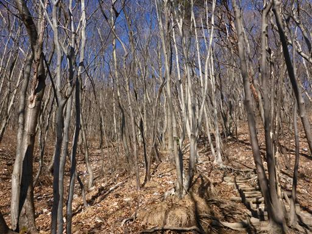
変な標識が所々にある。以前、ここで事故があったのだろうか？
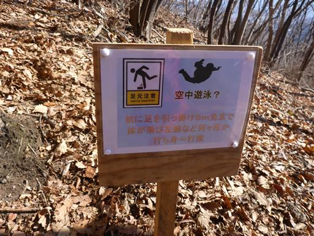
現在地を知らせるための標識がある。残念ながら10-10は山頂ではなくがっかりだった。
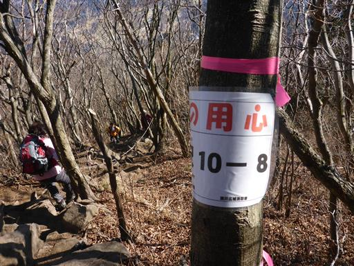
地蔵が並ぶ場所に到着。
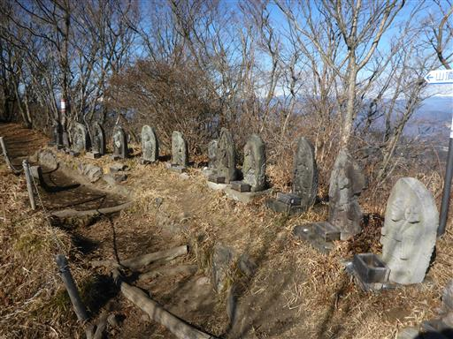
ここからは素晴らしい展望が広がる。正面に見えるのはは赤城山だ。
赤城山もまだ雪は積もっていなさそうだ。
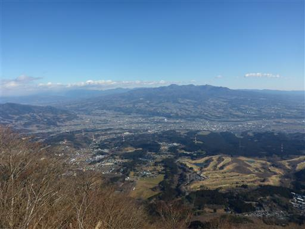
武尊山は雪で薄ら白く染まっている。手前にあるのは子持山だ。
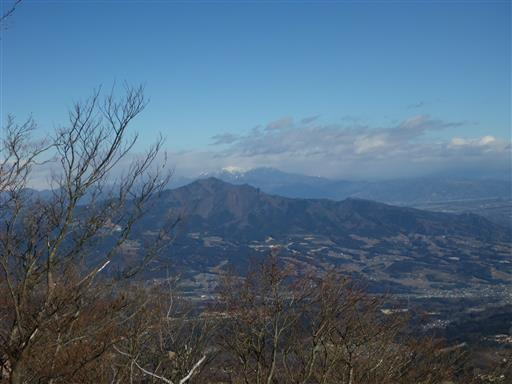
遥か遠くに筑波山が見えている。小さな山だが、周りに山が無いため良く目立つ。
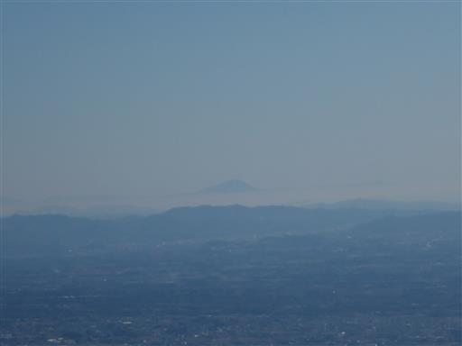
ここからは緩やかな尾根歩きになる。ここまで来ると風が吹き抜けて結構寒い。
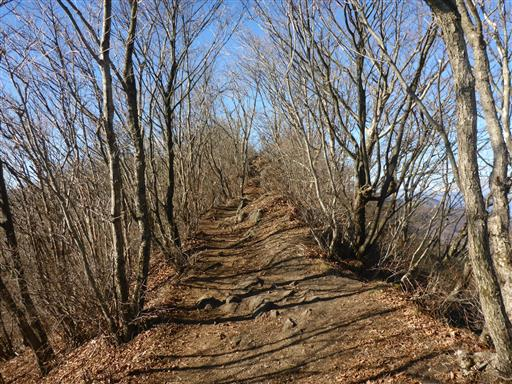
これまでは平凡な登山道だったが、小さな岩場が現れる。
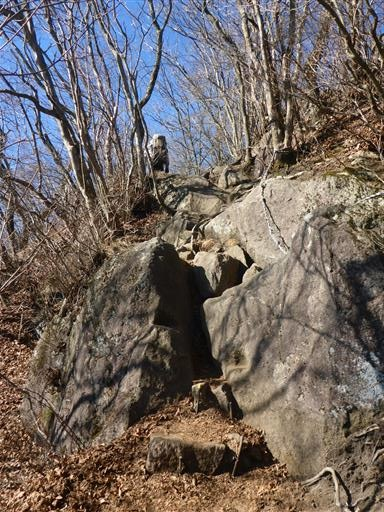
ここは簡単な岩場なので容易に登れる。
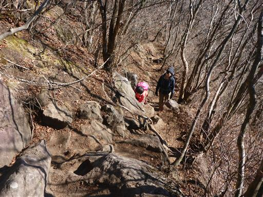
遠く富士山の頭が見えている。今日は非常に空気が澄んでいる。
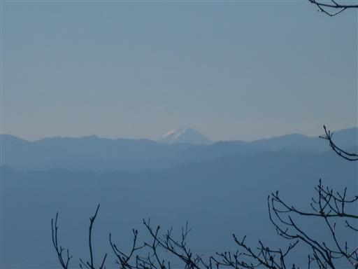
山頂に近づくと痩せ尾根になってくる。
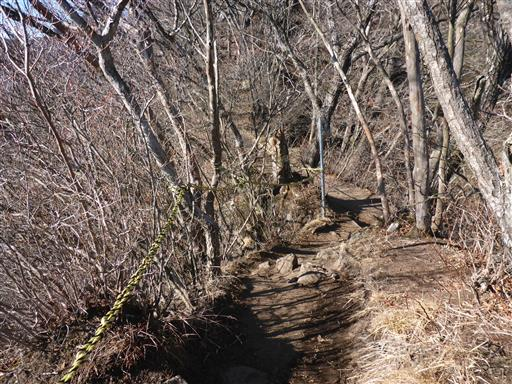
眼下に不思議な白い尾根が見えている。岩が露出しているのだろうか？
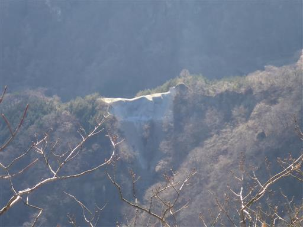
水沢山の山頂に到着する。標高1194m
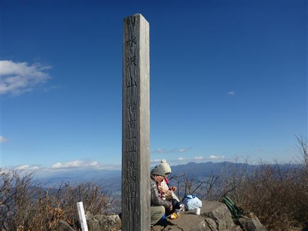
山頂からは最高の展望が広がる。多くの登山者が四囲の景色を楽しんでいる。
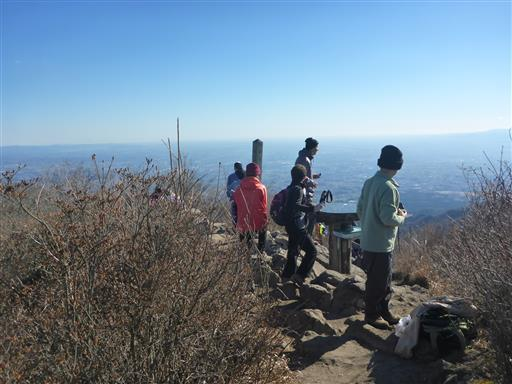
まず目を引くのが榛名山中心部の山々。
独特の形をした山々が並んでいる。
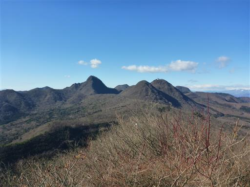
この辺りは雪が全く積もっていないが、上越国境の谷川岳は真白だ。
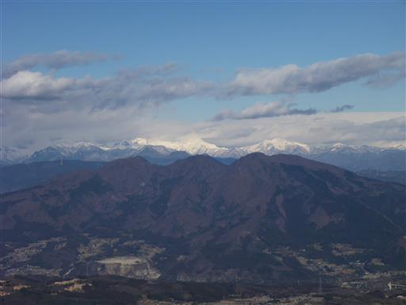
草津方面。こちらも雪に覆われている。
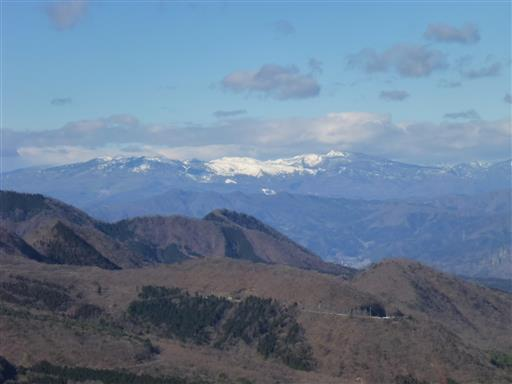
奥秩父とその奥に富士山の頭が見えている。

幾重にも山々が折り重なっている。
手前に見えるのは西上州の山々で妙義山や荒船山が目立っている。
遠くに見えるのは南アルプスや八ヶ岳だ。
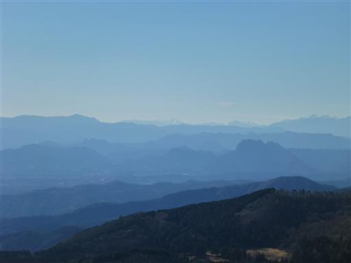
昼食をとったら下山開始。下りは息子も歩く。
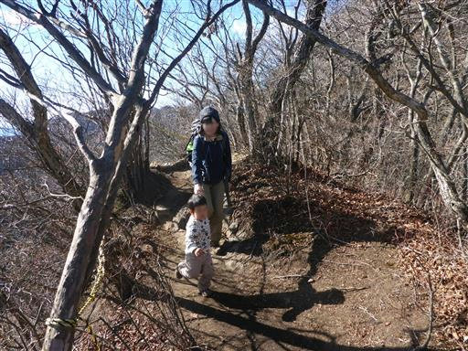
息子が歩いていると、なぜか娘の足が速くなる。
どんどん下って行くため、あとを追いかける。
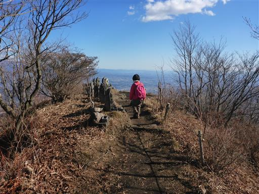
眼下に広大な関東平野が広がる。
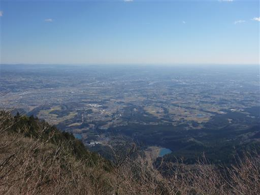
息子はまじめに歩かず、手にぶら下がって適当に足を運んでいる。
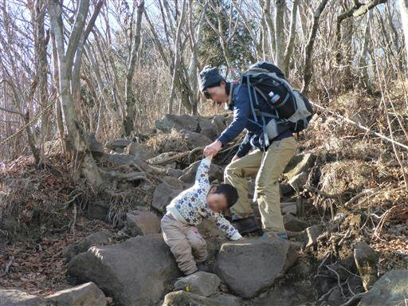
下山。最後は少し違う道を通って、直接駐車場に至る車道を歩く。
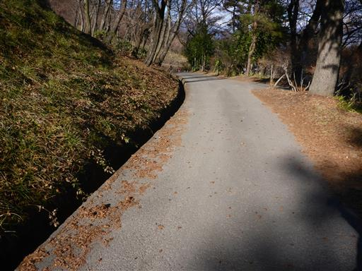
何かの実がたくさん落ちている。
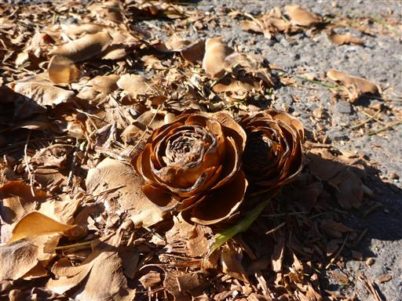
風が吹くと上から次々落ちてくる。何の実だろうか？
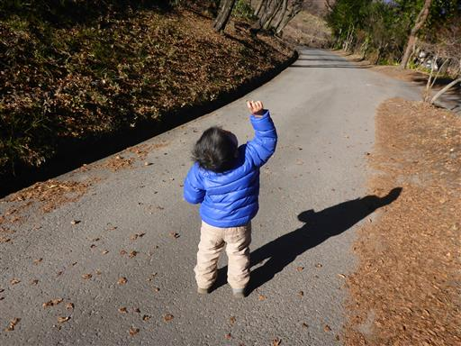
駐車場は車でいっぱいになっている。観光バスも来ていて、人気の観光地のようだ。
水沢山は手軽に登れる好展望の山で、地元民に人気が高い山だった。
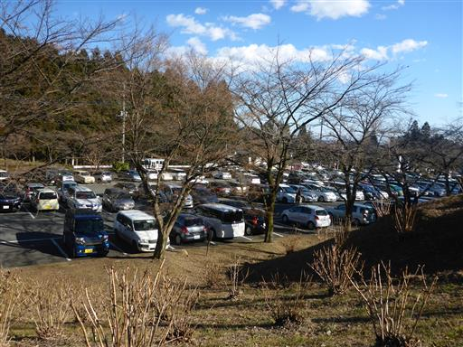